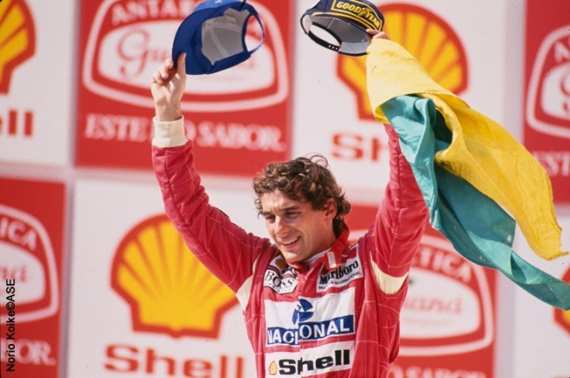

Autódromo José Carlos Pace (Interlagos)
Country: Brazil | First F1 race: 1973 | Lap length: 4.309 km | Race laps: 71

71Race laps
Anti-clockwiseDirection
São Paulo GPOfficial name
760mAltitude change
Why It Matters
Interlagos runs anti-clockwise and climbs uphill on the main straight — unusual for F1. The Senna S at the start creates first-lap chaos. Brazilian fans bring incredible energy, especially when a local driver competes.
Senna's Home
The circuit is named after Carlos Pace, but it is forever linked to Ayrton Senna. Emotional moments after races in São Paulo are part of F1 history.